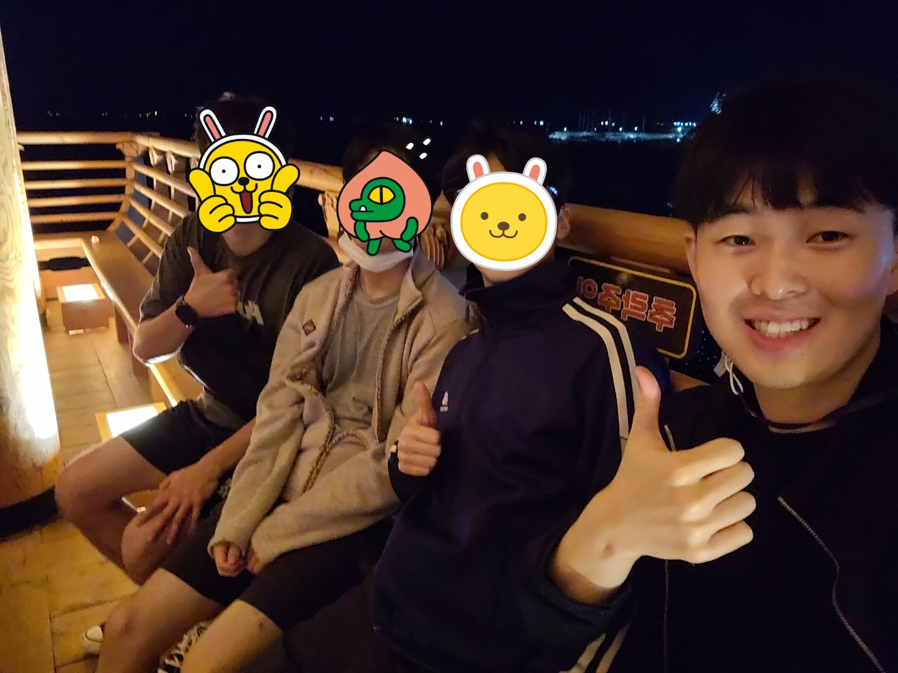
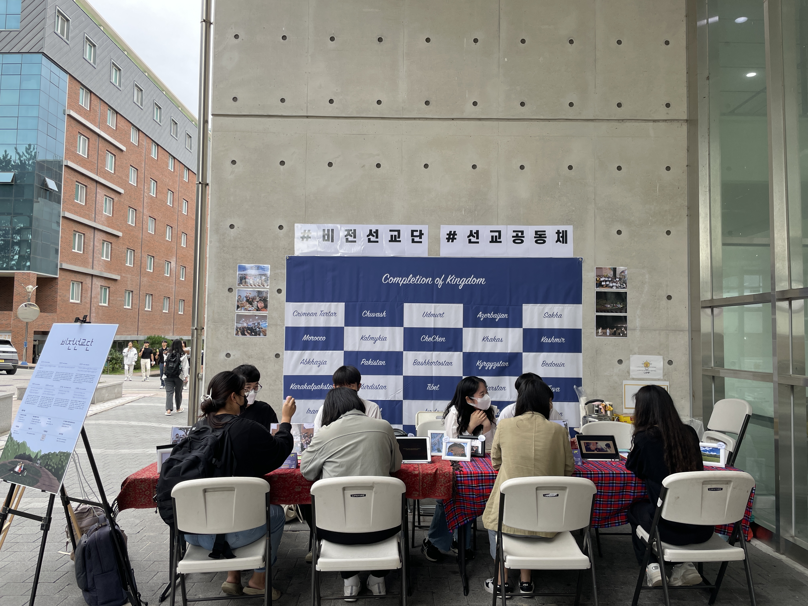
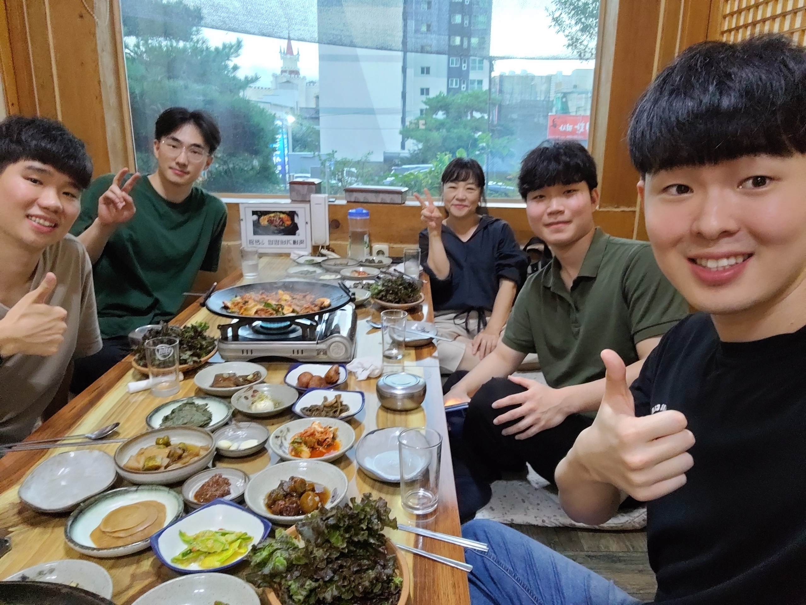

저는 포항 비전선교단 공동체에서 생활하며, 주로 포항 청년들과 한동대 학생들을 섬기며 지내고 있습니다. 어느덧 한동대가 개강하여 반가운 얼굴들을 만나기도 하고, 새로운 친구들을 만나며 지냅니다. 여러 사람들을 만나고, 선교단체 사역을 진행하면서 이전보다 좀 더 분주하게 지내고 있습니다.

<동아리원과 영일대에서>
바쁜 삶 가운데, 쉽게 잃어버리는 것이 주님과 동행하며 하루를 누리는 기도의 삶인 것 같습니다. 당장 해야 한다고 여겨지는 일들이 산적해 있기에 많은 시간을 그 일에 집중하게 됩니다. 분명 머리로는 기도해야 함을 인지하고, 기도에 능력이 있음을 어느 정도 경험했음에도 분주한 삶 가운데 기도습관을 만드는 것은 여전히 어려운 것 같습니다.

<비전선교단 동아리 홍보>
마가복음 14:38
시험에 들지 않게 깨어 있어 기도하라 마음에는 원이로되 육신이 약하도다 하시고
기도하지 못하던 세 명의 제자들을 보며 예수님이 위와 같이 말씀하십니다. 육체적 피곤함을 이기지 못하여 기도 대신 잠을 청했던 제자들의 모습이, 저의 모습과 가까운 것 같습니다. 그러나 이후 사도행전을 보면, 제자들은 주님을 붙잡으며 기도하고 성령님의 능력으로 사역하는 모습을 보여줍니다. 부분적으로만 주님을 의지하는 것이 아닌 전적으로 주님을 의지하고 동행하는 삶의 태도를 가지게 됩니다.
어떻게 제자들은 이처럼 전적으로 주님을 의지하게 되었을지 다 알 수 없지만, 최근에 어느 선교사님에게 들었던 말씀이 그 이유의 한 부분이 될 것 같습니다.
"모든 사람에게 주님의 음성을 듣는 기관이 있다. 오장육부와 같이 사람마다 다 있다. 우리 안에 하나님을 느끼는 기관이 있다. 죄 때문에 퇴화되고 일상 가운데 필요를 못 느껴 없는 것처럼 느껴지지만 반드시 있다. 주님이 그렇게 창조하셨다. 처음에는 찾아야 하지만, 반복적으로 주님의 음성을 들으며 이게 명확히 알게 된다. 이건 훈련해야 한다."
나의 기도를 주님께서 실제적으로 듣고 응답하신다는 것이 명확하게 느껴지거나, 신뢰가 있다면 주님과 동행하는 기도의 삶이 자연스러워지는 것 같습니다. 이미 우리 안에 주님의 음성을 들을 수 있는 기관이 있음에도, 내 경험과 지혜나 감정을 따라서 행동하는 것이 익숙하기에 기도의 삶을 사는 능력을 놓치는 것 같습니다. 세상의 말들이나, 내 안에 육체적인 생각을 기준으로 사는 것이 아니라 주님앞에 기도함으로 성령님의 임재를 소유한 삶이 되길 원합니다. 주님안에 거하는 훈련을 하여, 하나님과 동행하는 기쁨을 풍성히 누리는 모두가 되길 소망합니다.

<교회 청년들과 함께>
 <여름캠프 포항팀들과 함께>
<여름캠프 포항팀들과 함께>
{kind=link}